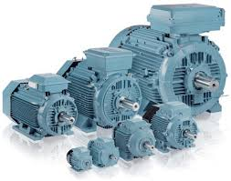

Descripción de la situación de aprendizaje
Esta situación de aprendizaje se desarrolla en el módulo profesional Máquinas Eléctricas del segundo curso del ciclo Formativo de Grado Medio de Instalaciones Eléctricas y Automáticas. El alumnado, tras haber estudiado transformadores, máquinas de corriente continua y fundamentos de máquinas rotativas, trabajará ahora el mantenimiento básico de motores de corriente alterna (CA).

Durante cuatro sesiones, el alumnado elaborará dos productos digitales:
- Una infografía interactiva sobre las operaciones esenciales de mantenimiento en motores de CA.
- Un vídeo o podcast explicando de forma clara y práctica cómo realizar dichas comprobaciones.
Ambos productos se realizarán con herramientas digitales accesibles (Genially, Canva, Clipchamp, Audacity, etc.). La docente realizará además una evaluación final breve sobre bobinados, debido a la proximidad del periodo de exámenes.
Etapa, nivel y módulo
- Formación Profesional – Grado Medio
- 2.º de Instalaciones Eléctricas y Automáticas
- Módulo: Máquinas Eléctricas
Agrupamientos y organización espacial
- Trabajo en grupos de 2-3 alumnos/as.
- Aula-taller ELE3 (aula de referencia de la asignatura) para explicación, análisis y grabación del vídeo.
- Aula ELE2 o préstamo de portátiles para creación digital
Temporalización
4 sesiones de 2 horas.
Productos del alumnado
- Infografía interactiva: “Mantenimiento esencial de motores de CA”.
- Vídeo: “Cómo realizar el mantenimiento básico de un motor de CA”.
Herramientas tecnológicas
- Canva, eXeLearning
- Teléfono móvil para grabar
- Teams
- Recursos complementarios: vídeos técnicos, placas de características